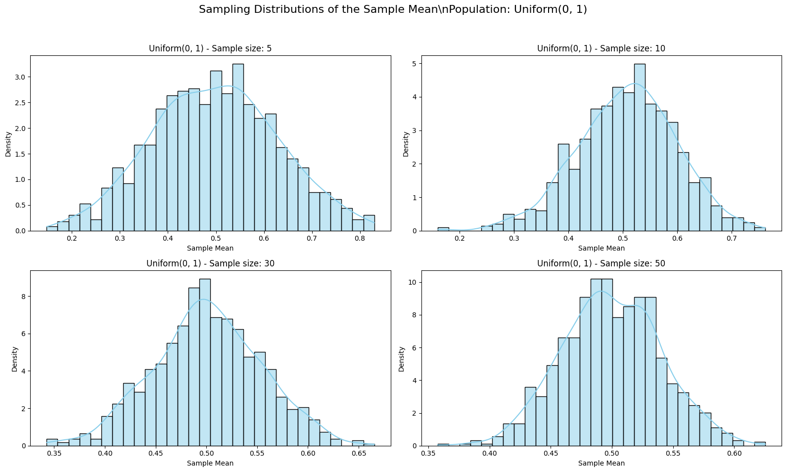
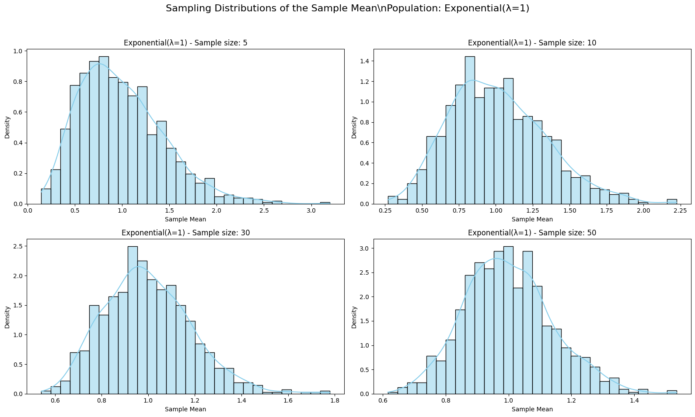

Problem 1
Exploring the Central Limit Theorem Through Simulations
Motivation
The Central Limit Theorem (CLT) is one of the most important theorems in probability and statistics. It states that the distribution of the sample mean of a sufficiently large number of independent and identically distributed (i.i.d.) random variables, each with finite mean and variance, will approximate a normal distribution, regardless of the original population's shape.
This result is fundamental because it justifies the widespread use of the normal distribution in statistical inference, even when the underlying data is not normally distributed.
The CLT provides the theoretical foundation for many practical applications:
- Estimating population means and constructing confidence intervals
- Quality control and process monitoring
- Risk modeling in economics and finance
- Evaluating the precision of simulations and forecasts
Simulations allow us to witness the CLT in action — transforming abstract theory into concrete, visual understanding.
Objective
- Demonstrate the Central Limit Theorem using computational simulations.
- Show how the distribution of sample means becomes increasingly normal as sample size grows.
- Compare the convergence behavior across different types of population distributions.
- Reinforce understanding through visualization and empirical evidence.
Theoretical Background
Let $X_1, X_2, \dots, X_n $ be i.i.d. random variables drawn from a population with mean $\mu $ and finite variance \(\sigma^2\). The CLT states that the sample mean:
will, as \( n \to \infty \), follow a normal distribution:
This means:
- The mean of the sampling distribution remains \( \mu \)
- The variance decreases with \( n \), improving estimation precision
- The shape of the sampling distribution approaches normality
The speed of this convergence depends on the skewness and kurtosis of the original population distribution. Symmetric distributions (like Uniform) converge faster; skewed distributions (like Exponential) converge more slowly.
Methodology
-
Choose population distributions with distinct properties:
-
Uniform(0, 1) — symmetric, bounded
- Exponential(λ = 1) — highly skewed, non-symmetric
-
Binomial(n = 10, p = 0.5) — discrete, moderately symmetric
-
Simulate sampling distributions:
-
For each distribution, generate 1000 sample means for varying sample sizes: 5, 10, 30, 50
-
Use histograms to visualize the distribution of sample means
-
Observe the effect of increasing sample size on the shape of the sampling distribution.
Python Code: Simulating the CLT
import numpy as np
import matplotlib.pyplot as plt
import seaborn as sns
import os
# Simulation settings
sample_sizes = [5, 10, 30, 50]
num_samples = 1000
distributions = {
"Uniform(0, 1)": lambda n: np.random.uniform(0, 1, size=n),
"Exponential(λ=1)": lambda n: np.random.exponential(scale=1.0, size=n),
"Binomial(n=10, p=0.5)": lambda n: np.random.binomial(n=10, p=0.5, size=n),
}
# Plotting sampling distributions for each population and sample size
for dist_name, dist_func in distributions.items():
plt.figure(figsize=(16, 10))
for i, n in enumerate(sample_sizes, 1):
sample_means = [np.mean(dist_func(n)) for _ in range(num_samples)]
plt.subplot(2, 2, i)
sns.histplot(sample_means, kde=True, stat='density', bins=30, color='skyblue')
plt.title(f"{dist_name} - Sample size: {n}")
plt.xlabel("Sample Mean")
plt.ylabel("Density")
plt.suptitle(f"Sampling Distributions of the Sample Mean\\nPopulation: {dist_name}", fontsize=16)
plt.tight_layout(rect=[0, 0.03, 1, 0.95])
plt.show()



Interpretation and Observations
- Small sample sizes tend to preserve the shape of the original population distribution.
- As sample size increases, the sampling distribution of the sample mean becomes increasingly bell-shaped and symmetric.
-
The rate of convergence to normality varies across distributions:
-
Uniform(0, 1):
Converges rapidly due to symmetry and bounded support. -
Exponential(λ = 1):
Converges more slowly due to strong right skew and infinite tail. -
Binomial(n = 10, p = 0.5):
Convergence depends on the binomial distribution’s shape — fastest when symmetric (p = 0.5).
These results align with the Central Limit Theorem, which predicts that the distribution of sample means will tend toward normality as sample size increases, regardless of the original distribution.
Real-World Applications
-
Quality Control:
Monitoring average dimensions or weights in manufacturing to detect defects. -
Surveys and Polling:
Estimating average opinions, behaviors, or characteristics of a population from sample data. -
Finance and Insurance:
Modeling aggregated risk, claims, or investment returns assuming normal approximation. -
Medical Research:
Estimating mean treatment effects and evaluating clinical trial outcomes.
Conclusion
The Central Limit Theorem (CLT) is a cornerstone of modern statistics. It explains why normal distributions are so commonly used, even when underlying data are not normally distributed.
By simulating the CLT across various population distributions, we observe:
- The robustness of the CLT across different shapes
- The predictable behavior of sample means under repeated sampling
- The importance of sample size for statistical inference
Even when the population is skewed or discrete, the sampling distribution of the mean becomes increasingly normal with larger sample sizes.
The CLT enables us to:
- Use the normal distribution to make probability-based predictions
- Construct confidence intervals
- Perform hypothesis testing
In sum, simulations transform abstract statistical theory into a powerful, intuitive understanding — and highlight why the CLT is essential across science, engineering, economics, and beyond.